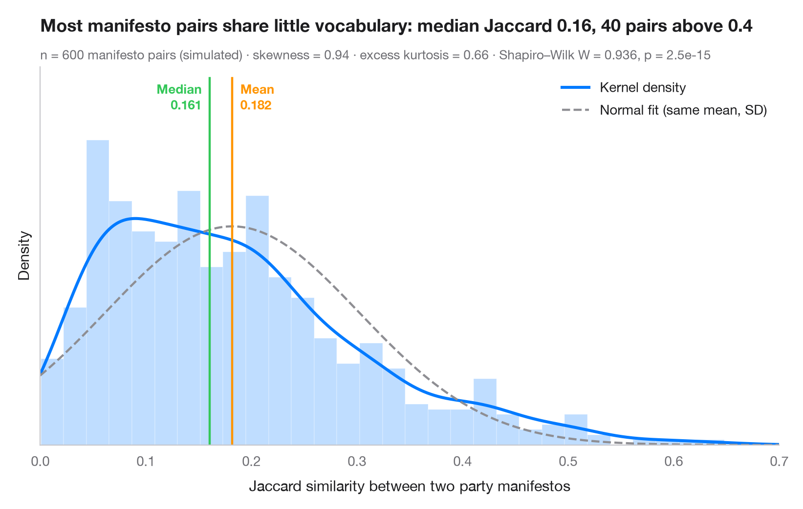

带密度曲线的直方图
直方图、核密度和拟合的正态曲线，并附形态统计量。

这是审视任何连续变量的第一步。柱形以密度刻度展示经验分布，实线是核密度估计（KDE），虚线是均值和标准差相同的正态分布。两条曲线不一致时，说明数据并非正态——此处长长的右尾把均值拉到了中位数之上。
数据为 scikit-learn 自带的 569 例乳腺癌活检的平均肿瘤面积。scipy.stats.gaussian_kde 绘制密度曲线，scipy.stats.skew / kurtosis 描述分布形态，scipy.stats.shapiro 检验正态性。
代码及图中文字均为英文。
import matplotlib.pyplot as plt
import numpy as np
from scipy import stats
from sklearn.datasets import load_breast_cancer
# Data: mean area of the cell nuclei (in pixels²) for each biopsy
x = load_breast_cancer(as_frame=True).frame["mean area"].to_numpy()
mean, median, sd = x.mean(), np.median(x), x.std(ddof=1)
# Shape statistics and normality test
skew, kurt = stats.skew(x), stats.kurtosis(x) # kurtosis: excess, 0 for a normal
W, p = stats.shapiro(x)
fig, ax = plt.subplots(figsize=(8, 5))
ax.hist(x, bins=40, density=True, color="#007AFF", alpha=0.25, edgecolor="white")
# Kernel density estimate and the normal curve with the same mean / SD
grid = np.linspace(0, x.max() * 1.05, 400)
ax.plot(grid, stats.gaussian_kde(x)(grid), color="#007AFF", lw=2.2, label="Kernel density")
ax.plot(grid, stats.norm.pdf(grid, mean, sd), color="#8E8E93", lw=1.6, ls="--",
label="Normal fit (same mean, SD)")
# Mean and median markers
ymax = ax.get_ylim()[1]
for value, name, color, ha, dx in [(mean, "Mean", "#FF9500", "left", 6),
(median, "Median", "#34C759", "right", -6)]:
ax.axvline(value, color=color, lw=1.6, ymax=0.9)
ax.annotate(f"{name}\n{value:,.0f}", (value, ymax * 0.9), xytext=(dx, -2),
textcoords="offset points", ha=ha, va="top", fontsize=9.5,
fontweight="semibold", color=color)
ax.set_xlim(0, grid[-1])
ax.set_yticks([])
ax.set_ylabel("Density")
ax.set_xlabel("Mean nucleus area (pixels²)")
ax.legend(loc="upper right")
ax.set_title("Tumour area is strongly right-skewed", pad=26)
ax.text(0, 1.02, f"n = {len(x)} · skewness = {skew:.2f} · excess kurtosis = {kurt:.2f} · "
f"Shapiro–Wilk W = {W:.3f}, p = {p:.1e}", transform=ax.transAxes,
fontsize=9.5, color="#6E6E73")
plt.show()
图表使用了可选的 Statlas 样式：添加 plt.style.use("statlas.mplstyle") 即可完全还原其外观。
如何引用
Statlas 由 Thierry Warin 创建并维护。如果它对你的工作有所帮助，敬请引用。
Warin, T. (2026). Histogram with density. In Statlas: The Python Gallery of Statistical Graphics. https://warint.github.io/pystatlas/distributions/histogram-density/
@misc{warin2026statlas,
author = {Warin, Thierry},
title = {Statlas: The Python Gallery of Statistical Graphics},
year = {2026},
howpublished = {\url{https://warint.github.io/pystatlas/}},
note = {Source code: https://github.com/warint/pystatlas}
}